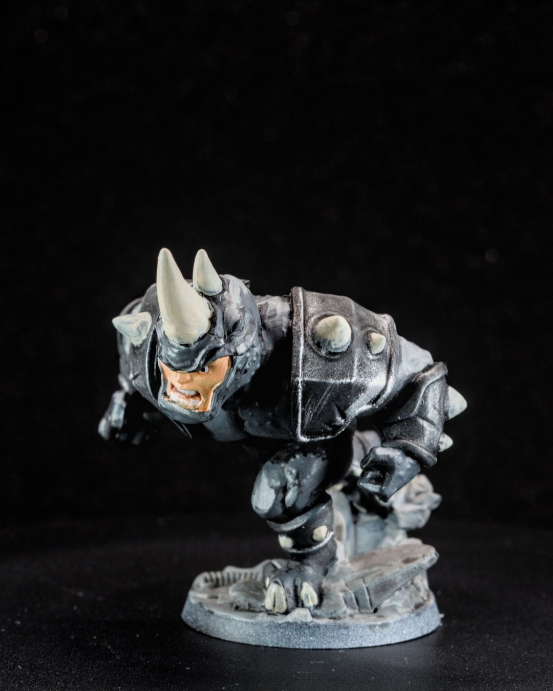

Stop chasing smooth blends. Start chasing strong contrast.
That's not permission to be sloppy. It's a reminder that most minis spend their lives two or three feet away from your eyes, on a table, under whatever lighting the game store has. At that distance, the things that make a mini look good are different from the things that win a close-up photo contest.
Why this matters
Smooth transitions take a long time and mostly disappear at tabletop distance. Strong value contrast (light next to dark), clean separation between big shapes and a bright focal point read from across the table instantly. If you're painting minis to play with, spending your time on readability gets you more "wow" per hour, and more finished minis.
The short version
Decide how far away the mini will be seen from, then spend your effort on the few things that read from there: the face, the silhouette, the main weapon or prop, the big armor panels and one bright accent. Push highlights and shadows a bit harder than feels natural. Call it done when it reads.
Where the effort goes (the 80/20)
- Face. Even a simple dark eye line and a lighter cheek or nose highlight gives people something to lock onto.
- Silhouette. Make sure the shape separates from itself. A dark cape against a dark body turns into one blob at three feet.
- Weapon or signature prop. This is usually the second thing people look at. Give it the cleanest edges.
- Big armor panels or cloth areas. One strong edge highlight does more than three subtle layers.
- One bright accent. A glow, a saturated color, a gold trim. Not five of them.
Values first, color second
The mini that taught me this was Rhino. It was my first mostly monochrome mini, and with no color to lean on, the shadows, midtones and highlights had to do all the storytelling. It felt like a crash course in lighting. If you want your minis to read better, try painting one in basically one color.

Squads and teams
Contrast works at the group level too. On the Mass Effect squad I leaned on cool blues against warm reds and a shared basing scheme so the team read as a unit. On my first full Blood Bowl roster, the Tomb Kings, the big lesson was balancing speed against detail across a whole team.
Bonus hot take: real metallics beat NMM on the table
Non-metallic metal (NMM) is painting shiny metal with regular, non-metallic paints: hand-placed reflections, gradients from dark to bright white. The pros use it for competition pieces and photography, and in a close-up photo it can look incredible.
On the table, I think actual metallic paint looks better. NMM is painted for one viewing angle and one imagined light source, so it looks its best from the angle it was painted for. Real metallic pigment catches whatever light is in the room and shifts as the mini moves. It's also far faster, which matters when you're painting a whole team. If you want your metal to read from across the table, drybrushed metallics will get you there in a fraction of the time.
How to decide a mini is finished
- It reads from three feet away: you can tell who it is and what they're doing.
- The face and the main prop are the brightest, cleanest parts.
- The base doesn't compete with the mini.
- Nothing is actively distracting (a missed spot, a shiny thumbprint).
If all four are true, it's done. On Darth Maul, the face still wasn't where I wanted it, and I called him done anyway and moved on to the next project. Momentum is worth more than one perfect face.
Tradeoffs
- Display pieces are different. If a mini is going on a shelf or into a competition, smooth blends and subtle transitions matter much more.
- Photos are in between. A macro lens shows everything. Tabletop contrast still photographs well, but close-ups will reveal rough transitions. That's okay.
Checklist
- Hold the mini at arm's length and squint: does it still read?
- Is the face or focal point the brightest area?
- Did you push the top highlight one step further than feels comfortable?
- Is there one accent, not five?
Next: set yourself up for contrast before you start by planning the palette.